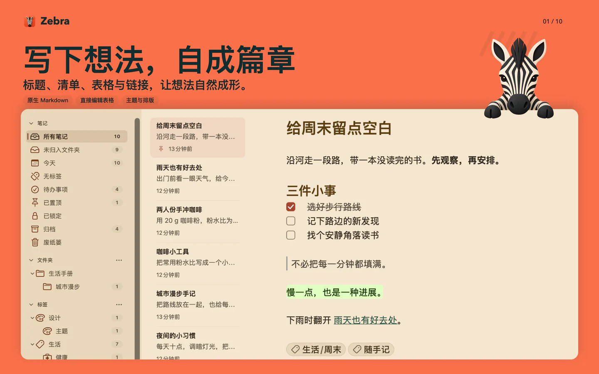

01
写下想法，自成篇章
标题、清单、表格与链接，让想法自然成形。
Markdown 笔记 · Mac、iPhone 与 iPad
随手记下一句，也能展开一整个项目。把文字、图表、公式与代码放在一起，让笔记跟得上你的思路。

Mac 上的 Zebra · 虚构演示内容，真实 App 界面
从一句话，到一套想法
从文字开始，慢慢补全细节。选择你的设备，看看 Zebra 如何承载不同的想法。
Mac · 8 个使用场景
标题、清单、表格与链接，让想法自然成形。
用 Mermaid 表达流程与关系，修改文字就能更新图表。
LaTeX 公式融入正文，思路与推导写在一起。
用语法高亮记录代码，让解释与实现留在同一篇。
文件夹管项目，层级标签串联跨项目的想法。
用自己的话描述内容，在本机查找相关笔记。
在本机把文档转成笔记，再用需要的格式分享成果。
跨设备同时修改普通笔记，正文会自动合并。
画面来自真实 App，笔记为演示内容。趴窗斑马是独立插画；同步图用于解释机制，并非实时同步录像。
换一台设备，接着写
按需开启私有 iCloud 同步，在使用同一 Apple 账户的 Mac、iPhone 和 iPad 之间继续写作。新安装默认关闭同步。
自己的设备 · 同一个 Apple 账户两台设备同时修改正文，改动会自动合并。离线时先安心写，重新连网后再同步。
并发修改会保留为不同的加密版本。解锁后查看、选择要使用的版本，也能通过历史恢复。
| 能力 | Mac | iPhone 与 iPad |
|---|---|---|
| 写作与整理 | Markdown、表格、图表、公式、代码、文件夹与层级标签 | Markdown、表格、图表、公式、代码、文件夹与层级标签 |
| 查找 | 本地语义与关键词搜索、文内查找 | 关键词搜索、文内查找 |
| 导入与分享 | 本地文档转换，以及 PDF、DOCX、ePub 等多格式导出 | 照片和文件附件；分享 Markdown 或笔记附件包 |
| 继续写作 | 按需开启 iCloud，与自己的设备同步 | 按需开启 iCloud，与自己的设备同步 |
Mac 需要 macOS 14 或更新版本；iPhone 和 iPad 需要 iOS 17 或更新版本。各端都支持 Markdown、表格、公式、Mermaid 图表、代码高亮、文件夹与层级标签。Mac 还提供本地语义搜索、文档转换和更多导出格式；iPhone 与 iPad 支持关键词搜索、文内查找、插入照片和文件，以及分享 Markdown 或笔记附件包。
无需注册 Zebra 账号。笔记默认保存在设备上，写作、整理和核心编辑功能可离线使用，改动会自动保存到本机。iCloud 同步需要 Apple 账户和网络；网页剪藏、链接预览与远程附件等联网功能会连接相应网站。
先在各台设备上登录同一个 Apple 账户，并确保 iCloud 可用，再分别打开 Zebra 设置中的 iCloud 同步。新安装默认关闭同步，已有选择会保留。首次同步需要时间，请打开 Zebra 并保持网络可用。同步暂时没有跟上时，可先查看应用内的同步状态，再检查网络和 iCloud 登录状态。停用一台设备的同步不会停用其他设备，也不会删除云端副本。
普通笔记使用 CRDT 合并正文：多台设备的并发改动可以在同步后汇合，离线编辑也能在重新连网后同步。加密笔记采用另一种方式：顺序修改继续更新，并发修改保留为不同的加密版本。出现待处理版本时，打开“加密笔记版本”，用对应密码查看内容，再选择要使用的版本。这个功能连接的是你自己的设备，不是多人协作空间。
在 Mac 上按 ⌘O 打开 Zebra Actions，用自己的话描述内容。本地语义搜索结合中英文含义和关键词查找相关笔记，无需另行下载模型；系统语义能力不可用时，关键词搜索仍然可用。加密笔记即使解锁，也不加入语义索引。iPhone 与 iPad 当前提供关键词搜索和笔记内查找。
Mac 可导入 Markdown、HTML、TextBundle 等格式，也能在本机把含文本的 PDF、DOCX、XLSX／XLS、PPTX 等文档转换成可编辑笔记并保留原件。转换侧重文字和结构，复杂版式可能变化。Mac 可导出 Markdown、PDF、HTML、DOCX、ePub 等格式。iPhone 与 iPad 可把照片或文件作为附件插入笔记，并从笔记菜单分享 Markdown，或把笔记与附件一起打包。
同步会传播修改，不应作为唯一备份。Mac 可通过“文件 → 导出备份”保存含笔记与附件的 .zebrabk 资料库备份，恢复前可先查看影响。停用同步或卸载应用不会清除其他设备、导出文件、备份或已有云端副本。删除加密笔记后，其同步历史仍保留用于恢复；当前没有清除全部云端历史的按钮。做删除或恢复操作前，请先保留需要的独立副本。
Zebra 没有开发者保存的密码或恢复密钥，无法找回遗失的笔记密码。请妥善保存密码；备份中的加密内容仍需要密码。逐篇加密保护正文和加密附件，标题及部分外层信息仍可见。将普通笔记改为加密，不会撤回此前已同步、导出或备份的明文副本。